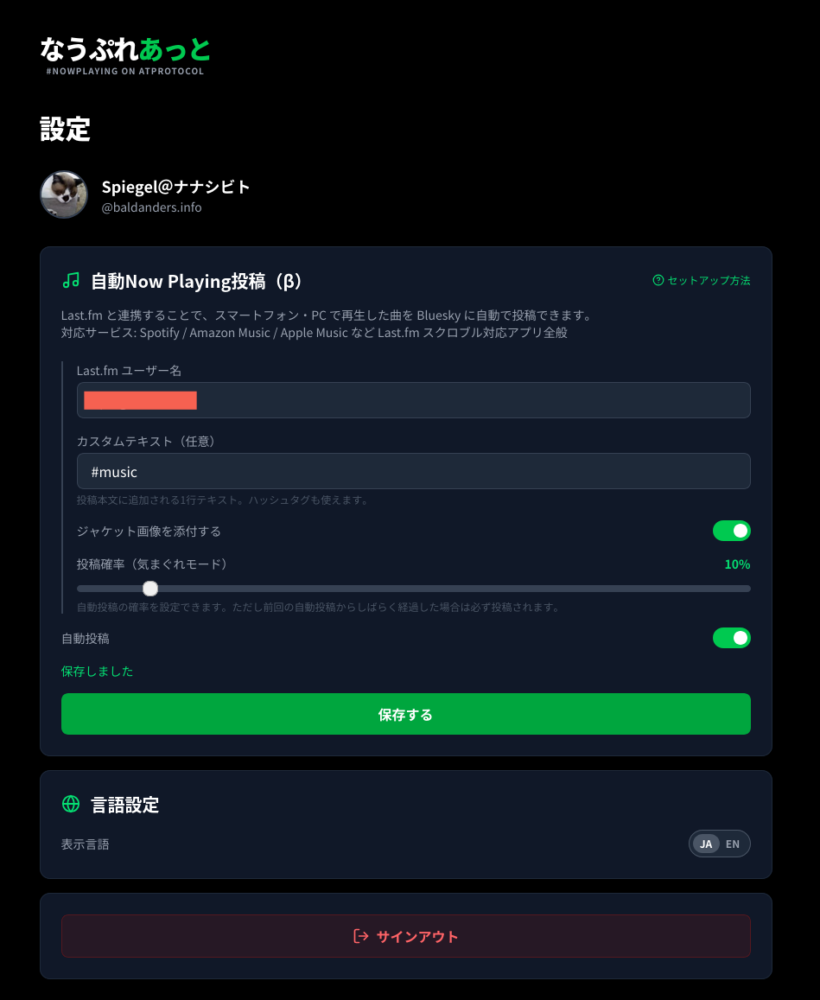
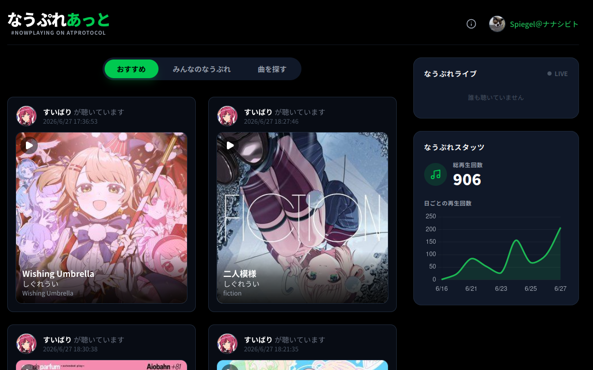

「なうぷれあっと」を試す

すいばりさんによる音楽共有サービス「なうぷれあっと」を試してみた。 ご本人による紹介記事はこちら
AT Protocol ベースの音楽共有サービスとしては Rocksky が有名らしいが，あちらのメインボリュームは（当然ながら）英語圏の人達なので，上がってくる楽曲もあちらの音楽が中心になる。 そこで
日本のユーザーが、日本語の音楽でつながれる場所が欲しかった。
というのがサービスを立ち上げた動機だそうな。
うんうん。 よく分かる。 私なんて今はアニソンか VTuber の楽曲しか聴かないため，JPOP ならまだしも，海の向こうの音楽はさっぱり分からない。 なので，こういうサービスは大変ありがたかったり。
というわけで試してみた。 サインアップは Bluesky (というか atproto) のアカウントで行う。 設定画面はこんな感じ。

設定より
「自動投稿」を有効にして Last.fm のユーザ名をセットすれば Last.fm の scrobble 情報を使って Bluesky に自動投稿してくれる。 Last.fm と Spotify などの音楽配信サービスを連携すれば，それらの視聴データも反映される。
私はスマホに Onkyo HF Player を入れていて，楽曲の音源を入れてヘヴィローテーションしているのだが，これも Last.fm のアプリで認識できた。
なうぷれあっと のデータは各ユーザの PDS リポジトリに公開情報として格納される。 なうぷれあっと自体はユーザの視聴データを保持しないが，各 PDS リポジトリのデータをかき集めてトップページに統計情報を表示しているらしい。
ATプロトコルは 分散型アーキテクチャ です。「再生回数が多い曲」「人気ユーザー」のような集計は、複数のサーバーをまたぐデータを扱う必要があります。
音楽SNSのような中央集権的なサービスが当たり前にやっていることを、分散型の制約の中でどこまで実現できるか試してみたかったです。

なうぷれあっとより
Bluesky への自動投稿は設定で間引くことができる。
さっき書いたように，私は聴き始めると割とヘヴィローテーションしてしまうので，全部を Bluesky にポストすると TL が #なうぷれ で埋め尽くされてしまう。
ポストの頻度についてはチューニング中だが，私は 10% くらいで十分かなぁと思っている。
実は Last.fm のことをすっかり忘れていた。 Scrobble の履歴を見たら2016年が最後のアクセスだった。 まだアカウントがあったことにびっくりだよ。 当時の履歴もちゃんと残ってたし。
そういえばなうぷれあっとに上がってる楽曲で Spotify 等で視聴可能なものについては該当のページに飛べるようになっている。 素晴らしい。 Spotify はアカウントだけ取って完全に放置してたんだよな1。 初めて役に立ったよ（笑）
今回のサービスを試してみて思ったが，ソーシャルなサービスだからといって何でもフラットにすればいいというわけじゃないよな。 グローバルとの繋がりは保ちつつ，やんわりと囲える設計がいいのかもしれない。 そう考えると Mastodon というか ActivityPub はよくできているかも。